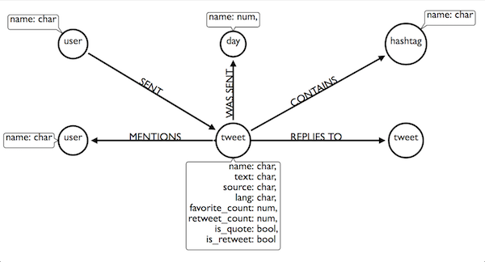
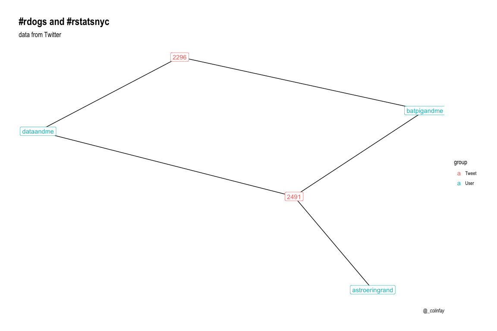
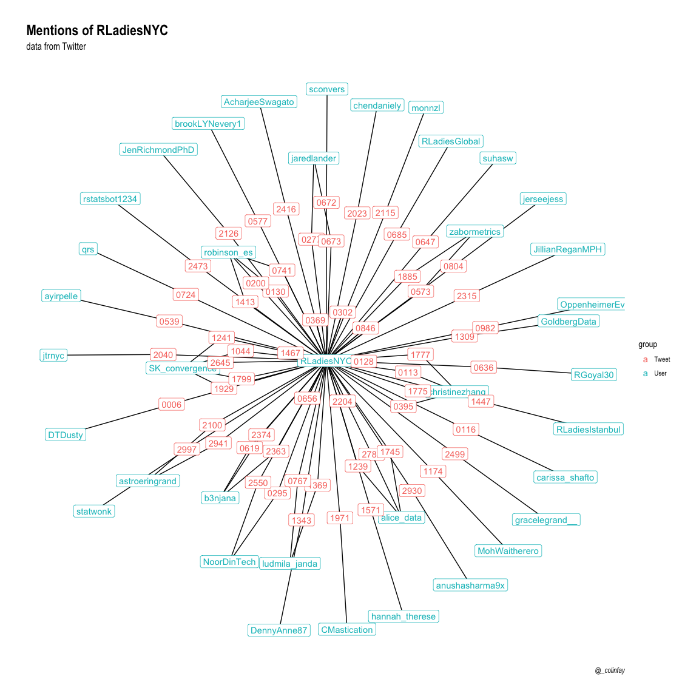

Playing with #rstatsnyc, Neo4J and R
A search on Twitter, some R, and just enough Neo4J.
Disclaimer: of course everything here could be done in pure R. But hey, where’s the fun in that?
Disclaimer bis: this blogpost relies on {neo4r}, a package still under active development.
Get the tweets
library(rtweet)
ny <- search_tweets("#rstatsnyc", n = 3000)
Tweets collected at Sys.time() == “2018-04-25 12:41:49 CEST”
nrow(ny)
## [1] 3000
I might not have everything here (as I’ve reached the limit of 3000 tweets), but let’s dive into this anyway.
Prepare for Neo4J
Let’s get some info:
range(ny$created_at)
## [1] "2018-04-20 18:52:27 UTC" "2018-04-25 09:57:44 UTC"
Here, every tweet was sent in the same month of the same year, so we can keep only the day.
library(dplyr)
ny <- ny %>% mutate(day = lubridate::day(created_at))
Also, as the status_id column is composed of large characters of 18
numbers, let’s recode this column:
library(forcats)
ny <- ny %>% mutate(status_id = fct_anon(as_factor(status_id)),
status_id = as.character(status_id))
# Be sure we still have 3000 observations
length(unique(ny$status_id))
## [1] 3000
The model
Here’s a model of the graph we want to create in Neo4J, made with http://www.apcjones.com/arrows.

Connect to Neo4J
library(neo4r)
con <- neo4j_api$new(url = "http://localhost:7474/",
user = "neo4j", password = "pouetpouet")
# Is the connection working?
con$ping()
## [1] 200
Create the CSV
Let’s create the CSV that will be sent to Neo4J. To do this, we need to:
- Select the info
- Write the csv in my Neo4J home
- Send a query to Neo4J to retrieve and model these CSV
Note: we’re working on a way to natively send csv with {neo4r}, so you won’t have to write in Neo4J home.
library(readr)
# CSV of tweets
ny %>%
select(status_id, day, text, source,
lang, favorite_count, retweet_count,
is_quote, is_retweet) %>%
write_csv("~/neo4j/import/ny_tweets.csv")
# CSV of users
ny %>%
select(status_id, screen_name) %>%
write_csv("~/neo4j/import/ny_users.csv")
# CSV of hashtags
ny %>%
select(status_id, hashtags) %>%
tidyr::unnest() %>%
na.omit() %>%
write_csv("~/neo4j/import/ny_hastags.csv")
# CSV of mentions
ny %>%
select(status_id, mentions_screen_name) %>%
tidyr::unnest() %>%
na.omit() %>%
write_csv("~/neo4j/import/ny_mentions.csv")
# CSV of replies
ny %>%
select(status_id, reply_to_status_id) %>%
na.omit() %>%
write_csv("~/neo4j/import/ny_replies.csv")
Before reading the file in Neo4J, we should add some constraints to
ensure the nodes are unique. If you’re not familiar with this
terminology, a constraint is a property that will ensure that every
label is unique: for example, here, we will have to ensure that every
status_id is unique.
Hence, if we try to create a node with a status_id that already
exists, this writting process will fail (and that’s the reason why we
are using MERGE for writting the nodes with constraints).
'CREATE CONSTRAINT ON (t:Tweet) ASSERT t.name IS UNIQUE' %>%
call_api(con)
## No data returned.
'CREATE CONSTRAINT ON (d:Day) ASSERT d.name IS UNIQUE' %>%
call_api(con)
## No data returned.
'CREATE CONSTRAINT ON (u:User) ASSERT u.name IS UNIQUE' %>%
call_api(con)
## No data returned.
'CREATE CONSTRAINT ON (h:Hashtag) ASSERT h.name IS UNIQUE' %>%
call_api(con)
## No data returned.
Note: the messages returned
## No data returned.are due to the fact that we haven’t retrieved anything from the DB, neither stats about the call (which could be retrieved with theinclude_statsarguments) nor data.
Importing the csv to the DB:
- With
include_stats = TRUE:
# Tweets but no day
'USING PERIODIC COMMIT 500
LOAD CSV WITH HEADERS FROM "file:///ny_tweets.csv" AS csvLine
MERGE (t:Tweet { name: csvLine.status_id, text: csvLine.text, source: csvLine.source, lang: csvLine.lang, favorite_count: toInteger(csvLine.favorite_count), retweet_count: toInteger(csvLine.retweet_count), is_quote: toBoolean(csvLine.is_quote), is_retweet: toBoolean(csvLine.is_retweet)});' %>%
call_api(con, include_stats = TRUE)
## No data returned.
## # A tibble: 12 x 2
## type value
## <chr> <dbl>
## 1 contains_updates 1.
## 2 nodes_created 3000.
## 3 nodes_deleted 0.
## 4 properties_set 24000.
## 5 relationships_created 0.
## 6 relationship_deleted 0.
## 7 labels_added 3000.
## 8 labels_removed 0.
## 9 indexes_added 0.
## 10 indexes_removed 0.
## 11 constraints_added 0.
## 12 constraints_removed 0.
- Without:
# Days
'USING PERIODIC COMMIT 500
LOAD CSV WITH HEADERS FROM "file:///ny_tweets.csv" AS csvLine
MERGE (d:Day {name : csvLine.day} )
WITH csvLine
MATCH (t:Tweet {name: csvLine.status_id})
MATCH (d:Day {name : csvLine.day} )
MERGE (t) -[:WAS_SENT]->(d);' %>%
call_api(con)
## No data returned.
# Users
'USING PERIODIC COMMIT 500
LOAD CSV WITH HEADERS FROM "file:///ny_users.csv" AS csvLine
MERGE (u:User { name: csvLine.screen_name})
WITH csvLine
MATCH (u:User { name: csvLine.screen_name})
MATCH (t:Tweet {name : csvLine.status_id})
MERGE (u) -[:SENT]-> (t);' %>%
call_api(con)
## No data returned.
# Hashtags
'USING PERIODIC COMMIT 500
LOAD CSV WITH HEADERS FROM "file:///ny_hastags.csv" AS csvLine
MERGE (h:Hashtag { name: csvLine.hashtags})
WITH csvLine
MATCH (t:Tweet {name : csvLine.status_id})
MATCH (h:Hashtag { name: csvLine.hashtags})
MERGE (t) -[:CONTAINS]-> (h);' %>%
call_api(con)
## No data returned.
# Mentions
'USING PERIODIC COMMIT 500
LOAD CSV WITH HEADERS FROM "file:///ny_mentions.csv" AS csvLine
MERGE (m:User { name: csvLine.mentions_screen_name})
WITH csvLine
MATCH (t:Tweet {name : csvLine.status_id})
MATCH (m:User { name: csvLine.mentions_screen_name})
MERGE (t) -[:MENTIONS]-> (m);' %>%
call_api(con)
## No data returned.
# Replies
'USING PERIODIC COMMIT 500
LOAD CSV WITH HEADERS FROM "file:///ny_replies.csv" AS csvLine
MERGE (t:Tweet { name: csvLine.reply_to_status_id})
WITH csvLine
MATCH (t:Tweet {name : csvLine.status_id})
MATCH (r:Tweet {name: csvLine.reply_to_status_id})
MERGE (t) -[:REPLIES_TO]-> (r);' %>%
call_api(con)
## No data returned.
Let’s see what we’ve got:
con$get_constraints()
## # A tibble: 4 x 3
## label type property_keys
## <chr> <chr> <chr>
## 1 User UNIQUENESS name
## 2 Hashtag UNIQUENESS name
## 3 Tweet UNIQUENESS name
## 4 Day UNIQUENESS name
con$get_labels()
## # A tibble: 4 x 1
## labels
## <chr>
## 1 Tweet
## 2 User
## 3 Hashtag
## 4 Day
con$get_relationships()
## # A tibble: 5 x 1
## relationships
## <chr>
## 1 WAS_SENT
## 2 SENT
## 3 CONTAINS
## 4 MENTIONS
## 5 REPLIES_TO
Let’s explore
Check check
Let’s start with a check to see if we have everything:
# Have we got all the tweets?
length(unique(c(ny$status_id, ny$reply_to_status_id)))
## [1] 3041
'MATCH (t:Tweet) RETURN COUNT(t) AS tweets_count' %>%
call_api(con)
## $tweets_count
## # A tibble: 1 x 1
## value
## <int>
## 1 3041
# Have we got all the Days?
length(unique(ny$day))
## [1] 6
'MATCH (d:Day) RETURN COUNT(d) AS days_count' %>%
call_api(con)
## $days_count
## # A tibble: 1 x 1
## value
## <int>
## 1 6
# Do we have all the users ?
length(unique(ny$screen_name))
## [1] 1021
'MATCH (u:User) RETURN COUNT(u) AS Users_count' %>%
call_api(con)
## $Users_count
## # A tibble: 1 x 1
## value
## <int>
## 1 1088
# All the hashtags?
ny %>%
select(status_id, hashtags) %>%
tidyr::unnest() %>%
na.omit() %>%
distinct(hashtags) %>%
nrow()
## [1] 177
'MATCH (h:Hashtag) RETURN COUNT(h) AS Hash_count' %>%
call_api(con)
## $Hash_count
## # A tibble: 1 x 1
## value
## <int>
## 1 177
Ok, so now that we have our data ready, let’s explore a little bit.
Who tweeted the most?
library(purrr)
'MATCH (t:Tweet) <- [:SENT] - (u:User)
RETURN u.name AS name, COUNT(u) AS count
ORDER BY COUNT(u) DESC
LIMIT 10' %>%
call_api(con) %>%
bind_cols() %>%
set_names(c("user", "n"))
## # A tibble: 10 x 2
## user n
## <chr> <int>
## 1 anushasharma9x 275
## 2 SK_convergence 172
## 3 robinson_es 110
## 4 christinezhang 105
## 5 rstatsbot1234 95
## 6 NoorDinTech 94
## 7 drob 71
## 8 b3njana 55
## 9 jaredlander 48
## 10 LaurusT001 43
You might see something surprising here: why do we have to bind_cols?
By design, {neo4r} does not bind columns for you, for the simple
reason that you can retrieve information that might not fit into a
single tidy data.frame.
Let’s put it straight into a dataviz:
library(ggplot2)
'MATCH (t:Tweet) <- [:SENT] - (u:User)
RETURN u.name AS name, COUNT(u) AS count
ORDER BY COUNT(u) DESC
LIMIT 10' %>%
call_api(con) %>%
bind_cols() %>%
set_names(c("user", "n")) %>%
ggplot() +
aes(reorder(user, n), n) +
geom_col(fill = viridis::plasma(1)) +
coord_flip() +
labs(x = "user",y = "tweets") +
theme_minimal()

Daily tweets
How many tweets by day?
'MATCH (t:Tweet) - [:WAS_SENT] -> (d:Day)
RETURN d.name AS day, COUNT(d) AS count' %>%
call_api(con) %>%
bind_cols() %>%
set_names(c("day", "n")) %>%
mutate(day = as.numeric(day)) %>%
ggplot() +
aes(day, n) +
geom_col(fill = viridis::cividis(1)) +
labs(x = "day",y = "tweets") +
theme_minimal()

What are the most used hashtags?
(excluding rstatsnyc, of course)
'MATCH (t:Tweet) -[r:CONTAINS]->(h:Hashtag)
WHERE NOT h.name = "rstatsnyc"
RETURN h.name as Hash, COUNT(h) AS count
ORDER BY COUNT(h) DESC
LIMIT 10' %>%
call_api(con) %>%
bind_cols() %>%
set_names(c("hashtags", "n"))
## # A tibble: 10 x 2
## hashtags n
## <chr> <int>
## 1 rstats 582
## 2 nycdatamafia 102
## 3 RStatsNYC 73
## 4 rladies 72
## 5 python 42
## 6 tidyverse 36
## 7 Rladies 19
## 8 datascience 17
## 9 rstatsNYC 14
## 10 RforEveryone 10
How many @drob or @robinson_es tweets?
(because apparently they were fighting :) ):
Get the number of tweets:
'MATCH (t:Tweet) <- [:SENT] - (u:User)
WHERE u.name = "drob" OR u.name = "robinson_es"
RETURN COUNT(u) AS count, u.name' %>%
call_api(con) %>%
bind_cols() %>%
set_names(c("n", "user"))
## # A tibble: 2 x 2
## n user
## <int> <chr>
## 1 71 drob
## 2 110 robinson_es
Get the average number of retweets:
'MATCH (t:Tweet) <- [:SENT] - (u:User)
WHERE u.name = "drob" OR u.name = "robinson_es"
RETURN u.name AS user, COUNT(u) AS count, AVG(t.retweet_count) as mean' %>%
call_api(con) %>%
bind_cols() %>%
set_names(c("user", "n", "mean_RT"))
## # A tibble: 2 x 3
## user n mean_RT
## <chr> <int> <dbl>
## 1 drob 71 12.8
## 2 robinson_es 110 10.1
Create a function…
… to get the number of tweets by a user
get_tweet_count <- function(who){
paste0('MATCH (t:Tweet) <- [:SENT] - (u:User {name: "', who, '"})
RETURN COUNT(t) AS ', who, ";") %>%
call_api(con)
}
get_tweet_count("RLadiesNYC")
## $RLadiesNYC
## # A tibble: 1 x 1
## value
## <int>
## 1 12
Who are the users who…
… are mentionned in a tweet containing the hashtag #Rladies?
'MATCH (u:User) <- [m:MENTIONS] - (t:Tweet) - [:CONTAINS]-> (:Hashtag {name : "Rladies"})
RETURN u AS Name, COUNT(u) AS n' %>%
call_api(con) %>%
bind_cols() %>%
set_names(c("user", "n")) %>%
arrange(desc(n)) %>%
top_n(5)
## Selecting by n
## # A tibble: 6 x 2
## user n
## <chr> <int>
## 1 robinson_es 11
## 2 AnushkaSharma 6
## 3 SK_convergence 6
## 4 RLadiesNYC 6
## 5 drob 5
## 6 jtrnyc 5
… were mentions in a tweet containing the hashtag #rdogs :
library(ggraph)
'MATCH (u:User) <- [m:MENTIONS] - (t:Tweet) - [:CONTAINS]-> (:Hashtag {name : "rdogs"})
RETURN u, m, t' %>%
call_api(con, type = "graph") %>%
convert_to("igraph") %>%
ggraph() +
geom_edge_link()+
geom_node_label(aes(label = name,
color = group)) +
labs(title = "#rdogs and #rstatsnyc",
subtitle = "data from Twitter",
caption = "@_colinfay") +
theme_graph()

… mention @RLadiesNYC
library(ggraph)
'MATCH (u:User) - [s:SENT] -> (t:Tweet) -[m:MENTIONS]-> (r:User {name:"RLadiesNYC"})
RETURN u, s, m, r' %>%
call_api(con, type = "graph") %>%
convert_to("igraph") %>%
ggraph() +
geom_edge_link()+
geom_node_label(aes(label = name,
color = group)) +
labs(title = "Mentions of RLadiesNYC",
subtitle = "data from Twitter",
caption = "@_colinfay") +
theme_graph()
